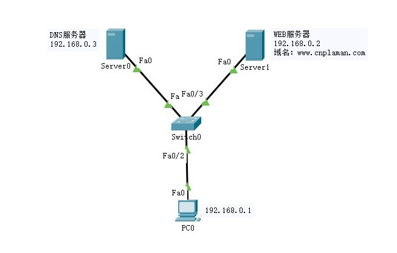
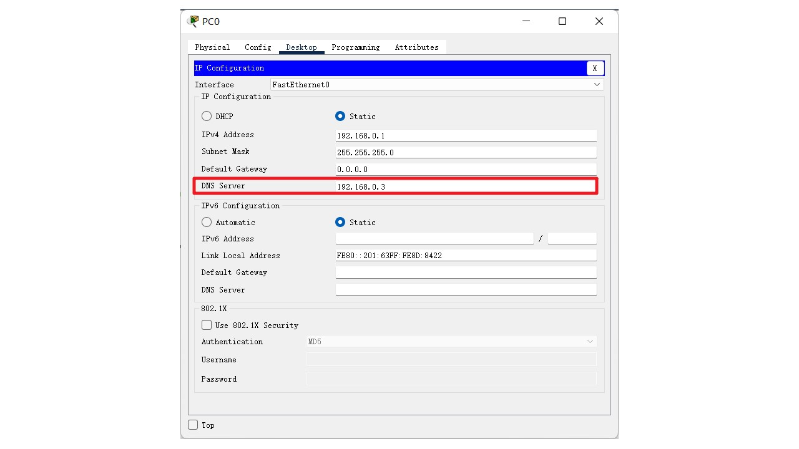
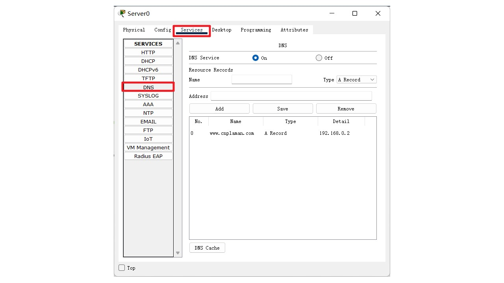
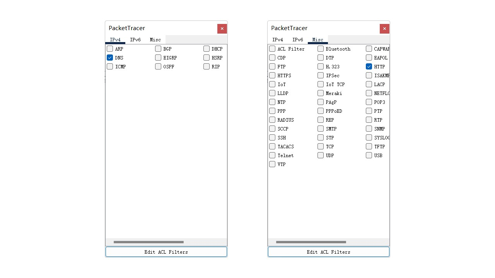
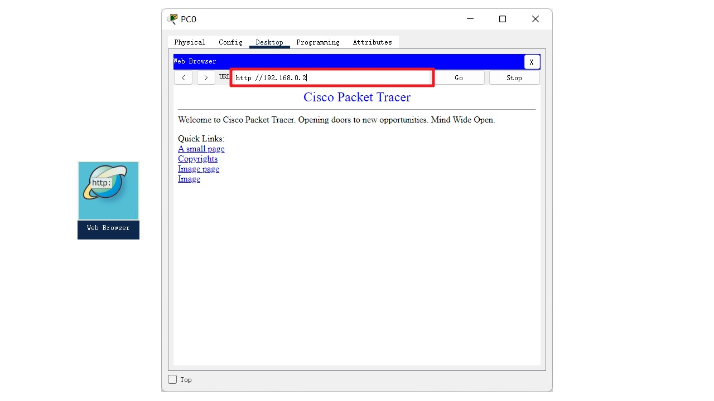

get /utils/data/rank/2024jk02.json http/1.1 host: glplaman.github.io
get / http/1.1 host: www.douyutv.com
json值对
POST /api/user/login HTTP/1.1
Host: api.example.com
Content-Type: application/json
{
"loginId": "admin",
"loginPwd": "123123"
}
表单普通值对
POST /api/user/login HTTP/1.1 Host: study.duyiedu.com Content-Type: application/x-www-form-urlencoded loginId=admin&loginPwd=123123
文件上传
POST /upload HTTP/1.1 Host: example.com Content-Type: multipart/form-data; boundary=----WebKitFormBoundary7MA4YWxkTrZu0gW ------WebKitFormBoundary7MA4YWxkTrZu0gW Content-Disposition: form-data; name="username" zhangsan ------WebKitFormBoundary7MA4YWxkTrZu0gW Content-Disposition: form-data; name="avatar"; filename="photo.jpg" Content-Type: image/jpeg [二进制图片数据] ------WebKitFormBoundary7MA4YWxkTrZu0gW--